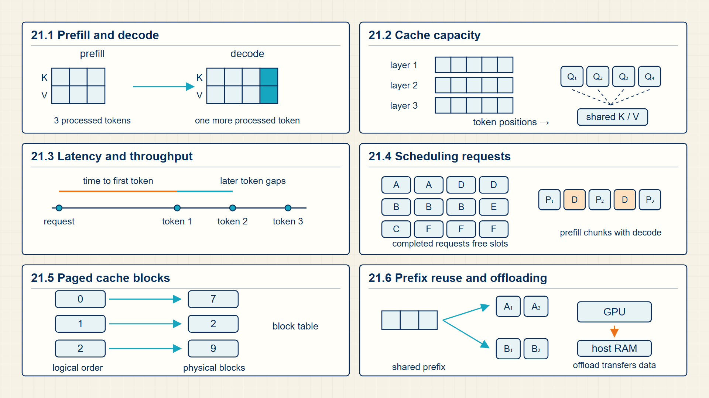
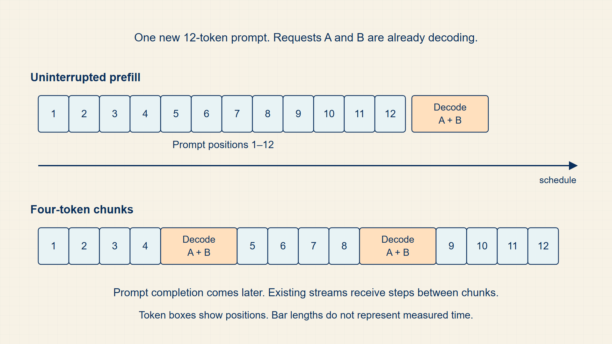
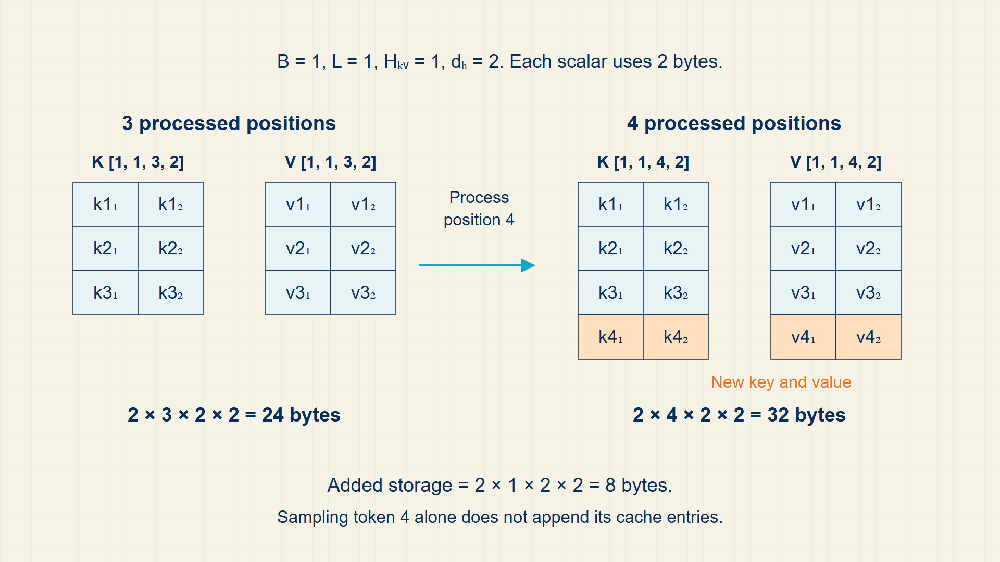
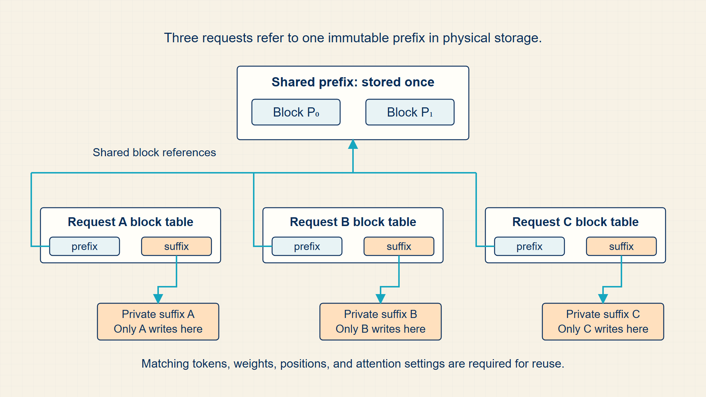
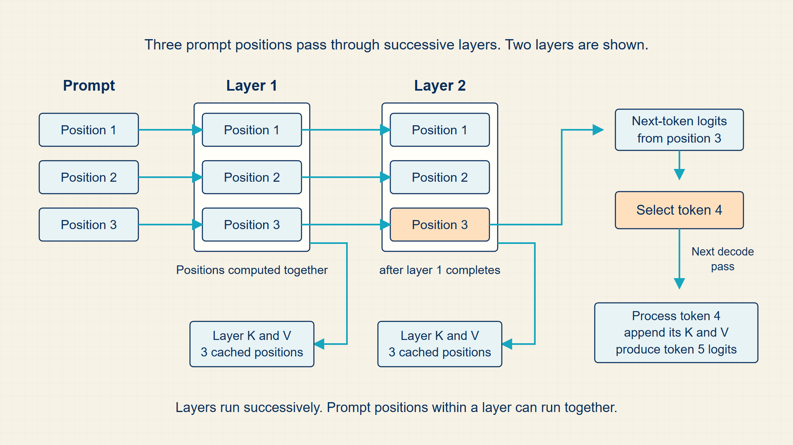

21 KV Cache: Speeding Up Generation
Autoregressive generation revisits the prompt and growing continuation for every new token. Storing prior attention keys and values avoids repeating that old work, at the cost of growing memory use.
Generation repeatedly extends one sequence by one token. The KV cache stores attention state from earlier tokens, while batching and cache management determine latency, throughput, and memory use in a serving system.
In code, model.generate exposes token generation and past_key_values; vLLM, SGLang, and TensorRT-LLM are supplementary engines for cache layout, batching, and scheduling.

21.1 Eliminating Redundant Attention Recomputations with the KV Cache
Transformer inference has two phases. Prefill processes the prompt and builds attention state; decode generates one new token at a time while reusing cached keys and values.
- Prefill: The forward pass over the existing prompt tokens.
- Decode: The repeated step that produces one new token per sequence.
- KV cache: Stored attention keys and values reused during autoregressive decoding.
- Prefix cache: A cache for shared prompt prefixes across requests.
Without a KV cache, each new token would require recomputing keys and values for all previous tokens. The cache saves computation by storing them once and appending new entries.
The cache is mathematically tied to causal self-attention: future decode steps need previous keys and values, but previous tokens do not need to be recomputed.
Origin note: KV caching is a systems memoization idea applied to transformer attention: store reusable keys and values so future decode steps do not repeat the same computation.
A KV cache is a collection of key and value tensors stored for every completed token, layer, and key/value head. It is not a cache of logits or complete hidden states. A new decode step still computes a new query, key, and value for the newly generated token.
During prefill, the model processes all prompt tokens and stores their keys and values. During decode, the new query compares with the stored keys and the newly appended key; the resulting attention weights mix the stored values and the new value. Earlier prompt keys and values are reused because they do not change after the prompt has been processed.
During autoregressive generation, the KV cache avoids recomputing keys and values for the \(T\) earlier positions at every step. The new query still attends to \(T\) stored keys, so one decode step remains linear in current context length along that axis. Whether decode is limited by arithmetic, memory bandwidth, or scheduling depends on model dimensions, batch size, context length, numerical format, and hardware.
Each layer stores keys and values by batch, KV head, sequence position, and head dimension.
KV cache dimensions:
\[ K,V\in\mathbb{R}^{B\times H_{\mathrm{KV}}\times T\times d_h} \tag{21.1}\]
The factor 2 counts keys and values; s is bytes per stored scalar.
KV cache bytes:
\[ \mathrm{bytes}=2\cdot\mathrm{layers}\cdot B\cdot H_{\mathrm{KV}}\cdot T\cdot d_h\cdot s \tag{21.2}\]
where 2 is keys plus values; layers, \(H_{KV}\), \(d_{h}\) is transformer depth, KV-head count, and head width; T is cached sequence length; s is bytes per stored scalar.
Each layer stores one key and one value vector for every batch item, KV head, token position, and head dimension. In grouped-query or multi-query attention, the number of KV heads can be smaller than the number of query heads.
Each added token increases cache storage by one key and one value vector per layer, batch item, and KV head.
Per-token KV-cache growth:
\[ \Delta\mathrm{bytes}_{\mathrm{per\ token}}=2LBH_{\mathrm{KV}}d_hs \tag{21.3}\]
where \(L\) is the number of layers, \(B\) is batch size, \(H_{\mathrm{KV}}\) is the number of key/value heads, \(d_h\) is head width, and \(s\) is bytes per stored scalar.
Multiplying this increment by cached sequence length \(T\) recovers the total byte estimate above.
Cache memory grows linearly with context length and can dominate inference memory.
Example: Appending one token to a small key-value cache
Use one request, one layer, one key/value head, head width two, and a prompt of three tokens.
After prefill:
K and V each have dimensions [1,1,3,2].
The cache contains one key and one value vector for each prompt token.
Decode one token:
Compute a new query, key, and value for token four.
Append the new key and value, so K and V become [1,1,4,2].
Reuse:
The query for token four attends to four stored key positions.
The keys and values for tokens one through three are reused rather than recomputed.
Memory growth:
With two bytes per stored value, prefill uses 2(1)(1)(3)(2)(2) = 24 bytes.
After one decoded token, the cache uses 2(1)(1)(4)(2)(2) = 32 bytes.
Each generated token adds one position to the cache, which saves repeated computation but increases memory use linearly with sequence length.
The following runnable Python function receives layer count, batch size, KV-head count, sequence length, head width, and bytes per stored value. It returns the idealized key-plus-value storage in GiB. The printed 1.0 GiB excludes allocator overhead, block fragmentation, model weights, and temporary tensors, so it is a lower-level capacity estimate rather than total serving memory.
Code example: A simple KV-cache memory estimate.
def kv_cache_gb(
layers, batch, kv_heads, seq_len, head_dim,
bytes_per_value=2,
):
bytes_total = (
2 * layers * batch * kv_heads * seq_len
* head_dim * bytes_per_value
)
return bytes_total / 1024**3
print(
kv_cache_gb(
layers=32, batch=1, kv_heads=8,
seq_len=8192, head_dim=128,
)
)For 32 layers, 8 KV heads, 8,192 positions, head width 128, and two-byte values, the keys and values require 1.0 GiB for one request.
The estimate excludes allocator overhead, cache block fragmentation, temporary activations, model parameters, and other serving state.
Caching avoids recomputing old keys and values, but it creates a memory footprint that grows with request length.
21.2 Diagnosing Compute-Bound Prefill and Memory-Bound Decode Latency
Time to first token (TTFT) measures queueing and prompt processing before generation begins; time per output token (TPOT) measures the repeated decode steps that follow.
- TTFT: Time to first token: queueing plus prompt prefill before the first generated token appears.
- TPOT: Time per output token during the decode phase after the first token.
- Head-of-line blocking: A long request delays other requests because a shared schedule waits behind it.
- Continuous batching: A serving policy that admits and removes requests while decode steps continue.
Prefill processes many prompt positions in parallel and builds the initial KV cache. Decode usually adds one token per request per step, so it is more sensitive to memory bandwidth, scheduling, and the number of active requests.
Static batching waits for a fixed group, while continuous batching can keep the batch populated as requests finish or arrive. Chunked prefill limits how much prompt work enters one scheduling interval, which can reduce interference with decode work.
TTFT decomposes the delay before the first generated token.
First-token latency:
\[ \mathrm{TTFT}=\mathrm{queue\,time}+\mathrm{prefill\,time}+\mathrm{first\,decode\,time} \tag{21.4}\]
where \(queue_{time}\) is time waiting for a scheduling slot; \(prefill_{time}\) is time to process prompt tokens; \(first_{decode,time}\) is time for the first decode step.
The first token is visible only after the request waits, all prompt positions are processed, and one decode step produces the next-token logits.
Reducing prefill time does not necessarily reduce queueing time; the serving scheduler and batch composition also matter.
TPOT is the average time spent per generated token during a decode interval.
Decode throughput:
\[ \mathrm{TPOT}=\frac{\mathrm{decode\,time}}{\mathrm{generated\,tokens}} \tag{21.5}\]
where \(decode_{time}\) is time spent generating output tokens; \(generated_{tokens}\) is number of generated tokens in that interval.
Divide the elapsed decode time by the number of output tokens produced. This average hides per-request variation but gives a comparable serving measure.
A lower TPOT improves streaming speed, while a scheduler may accept higher TPOT to increase aggregate throughput under load.
Example: First-token latency
If queueing takes 8 ms, prefill 20 ms, and the first decode step 5 ms, TTFT is 33 ms.
Example: Decode throughput
If a batch generates 40 tokens in 200 ms, the average TPOT is 5 ms per token.
Prefill and decode stress different hardware resources. Batching schedules them across several requests.
21.3 Maximizing Serving Throughput with Continuous Batching and Chunked Prefill
Inference serves many requests whose prompts and generated lengths differ. The mathematical token loop is simple, but the serving system must manage shared state, masks, and sampling decisions.
- Request batch: A group of sequences processed together for hardware efficiency.
- Stopping rule: A condition such as EOS token, max tokens, or application-specific stop string.
The batch axis in inference is dynamic: requests enter and leave as users submit prompts and sequences finish. Each request has its own context, KV cache positions, and decoding state.
This is where performance engineering begins. The mathematical objects are logits, probabilities, masks, and caches; the serving engine decides how to pack and schedule them.
Static batching waits for every sequence in the batch, so one long request can leave completed rows occupying batch slots. Continuous batching removes finished requests and admits new ones between decoding steps, keeping more of the batch useful.
Chunked prefill divides a long prompt into smaller pieces that can be interleaved with decode work. Smaller chunks can protect per-token latency for active requests, while larger chunks complete the new request’s prompt sooner. The scheduler chooses a balance between time to first token and time per output token.
KV-cache offloading moves selected cache blocks away from accelerator memory when capacity is tight. It increases available sequence capacity but adds transfer latency, so it is useful only when the saved memory is worth the additional data movement.
A serving system batches requests because matrix operations are more efficient when several active sequences are processed together. Unlike a training batch, requests can enter at different times, have different prompt lengths, and finish after different numbers of generated tokens.
Continuous batching packs the currently active requests at each decode step. The engine must keep each request’s token history, attention mask, cache position, and sampling state separate even while it evaluates their logits together. Larger batches usually improve throughput but can increase waiting time for an individual request.
Cache offloading is a capacity trade, not a different attention algorithm. A request’s old key and value blocks may be stored in CPU memory or another tier while the most immediately needed blocks remain on the accelerator. Before a later attention operation can use an offloaded block, the serving system transfers it back. The attention result is intended to be the same; the cost moves from accelerator memory capacity to transfer time and scheduling complexity.
This trade is easiest to see with two long requests. If their combined caches no longer fit in accelerator memory, an engine can reject one request, shorten its usable context, or move colder blocks away from the accelerator. Offloading admits more context but may delay a decode step when an old block is needed again. The useful measurement is therefore not cache size alone, but cache size together with time to first token, time per output token, and the request mix.
Chunked prefill and continuous batching address a related scheduling problem. A long incoming prompt can otherwise occupy the accelerator while already-active requests wait for their next token. Chunked prefill alternates short prompt chunks with decode steps. This protects the generation speed of active requests while managing first-token latency for new prompts.
Computation map
The serving system tokenizes each prompt, runs prefill to create its initial keys and values, and then schedules repeated one-token decode steps while preserving each request’s separate cache and sampling state.

Prefill produces the cache that decode reads and extends. Continuous batching decides which requests share each hardware step, while chunking limits how long a new prompt can delay requests that are already decoding.
Example: Interleaving a long prefill with active decoding
One request has a 12-token prompt while two requests are already decoding.
Without chunking:
Process all 12 prompt tokens before the active requests receive another decode step.
With chunks of 4:
prefill 4 tokens -> decode active requests -> prefill 4 -> decode -> prefill 4
The new request reaches its first token later than an uninterrupted prefill, but active requests wait for shorter intervals.
Chunk size trades prompt completion speed against interruption of ongoing decode work.
Batch scheduling helps requests share an accelerator. Prefix caching avoids repeating work when requests begin with the same token sequence.
21.4 Reusing Common Prompt States with Prefix Caching
A prefix cache stores reusable attention state for prompt tokens that appear again across requests.
Time to first token (TTFT) remains the sum of queue time, prompt-prefill time, and the first decode step. Prefix caching can shorten only the prefill component when the prefix tokens, model weights, tokenization, and attention settings match; it does not directly remove queue time.
Prefill computes keys and values for every prompt position. If another request begins with the same prefix, a serving engine can reuse cached state instead of recomputing the prefix from the model weights.
The benefit is latency and compute reduction for repeated prompts; the cost is memory pressure and cache-management complexity. Prefix caching therefore belongs to serving behavior, not to the abstract probability rule for sampling one token.
Two requests with an identical system prompt or document prefix create the same key and value tensors for that shared prefix. A prefix cache stores those tensors once and lets later requests begin after the repeated prefix instead of recomputing its attention layers.
This reuse is valid only when the model weights, tokenization, attention configuration, and prefix tokens match. It reduces prompt-processing work and first-token latency; it does not change the probability rule used to select later tokens.
A reusable prefix must match the same token IDs, model weights, and cache interpretation. Cache-block management determines where that state is stored.
21.5 Managing Non-Contiguous GPU Memory with PagedAttention
A serving engine executes the same autoregressive probability calculation while choosing how requests, cache blocks, and kernels are organized on available hardware.
- Hugging Face generate: A high-level Transformers API that repeatedly applies a model and decoding rule to produce token IDs.
- vLLM: A serving engine that manages paged KV-cache blocks and dynamic batching for transformer generation.
- SGLang: A serving runtime that schedules structured generation and reuses prefixes across requests.
- TensorRT-LLM: An NVIDIA-oriented inference stack that builds optimized transformer execution paths.
model.generate is the clearest starting point because it exposes the familiar model inputs, decoding settings, generated token IDs, and optional past_key_values. It is appropriate for inspecting the mathematics and for small local experiments. A serving engine becomes useful when many requests must share an accelerator without treating every prompt as an isolated call.
vLLM, SGLang, and TensorRT-LLM make different implementation choices, but their controls correspond to the same guide objects: request batches, token positions, causal masks, KV-cache storage, and sampling rules. A cache or batching option changes storage and scheduling. It does not alter the model’s output probabilities unless decoding settings or model computations also change.
Engine flags are implementation-specific. For example, --enable-prefix-caching is a vLLM flag, not a generic transformer operation. The key serving questions are practical. Which prompt prefixes are reused? Where are key/value blocks stored? How do requests enter a batch? These choices determine time to first token (TTFT), time per output token (TPOT), and GPU memory capacity.
Serving changes the schedule and storage of the same attention computation. The next part applies the representation pattern to non-text inputs.
21.6 Inference-state trace
Inference is a stateful loop. During prefill, the model processes the whole prompt and builds key/value tensors for every layer. During decode, it processes only the newly generated token, but it attends to the cached keys and values from all previous positions.
The sampling decision starts from the last-position logits. Greedy decoding selects the largest logit. Temperature rescales the logits before softmax. Top-k keeps a fixed number of candidates, and top-p keeps the shortest sorted probability prefix whose cumulative mass reaches the threshold. These operations change the decoding distribution even though the model weights do not change.
Autoregressive decoding is fast because previous keys and values are stored instead of recomputed.

The cache grows with layers, heads, head dimension, batch size, and context length. Decode is fast only because these keys and values are reused.
Serving systems can reuse prompt-prefix computation across requests when the token prefix is shared and cache blocks can be addressed safely.

Prefix caching is cross-request reuse. It is distinct from the per-request KV cache, and it depends on prompt layout and exact token prefixes.
Transformer inference state starts with prefill: the prompt is tokenized, embedded, and processed in parallel before one-token decode begins.

Prefill creates the initial keys and values that decoding later reuses.
Inference repeatedly converts last-position logits into a next token while reusing cached attention state. Last-position logits have dimensions \([B,V]\); each layer stores \(K\) and \(V\) with dimensions \([B,H,T_{\mathrm{cache}},d_h]\). Prefill builds the cache from the prompt; decode appends one key and one value per generated token.
In PyTorch, generate(use_cache=True) exposes cache reuse; vLLM and similar engines manage paged cache blocks and batching.
Performance note: Decode is often memory-bandwidth and latency limited because each new token reads the growing cache.
Example: KV cache growth
Model specification: \(L=2\) layers, \(H_{\mathrm{KV}}=4\) key-value heads, head width \(D_h=8\), batch size \(B=1\), and float16 storage at \(2\) bytes per value.
After PREFILL:
K per layer: \(1\cdot4\cdot5\cdot8=160\) values, requiring \(160\cdot2=320\) bytes.
V per layer: \(1\cdot4\cdot5\cdot8=160\) values, requiring \(160\cdot2=320\) bytes.
Across two layers and both K and V, the total cache is \(2\cdot2\cdot320=1{,}280\) bytes.
After DECODE step 1:
K per layer: [1, 4, 6, 8] = 192 values per tensor
Total cache: \(2\cdot2\cdot192\cdot2=1{,}536\) bytes.
After DECODE step 2:
Total cache: \(2\cdot2\cdot1\cdot4\cdot7\cdot8\cdot2=1{,}792\) bytes.
After DECODE step 3:
Total cache: \(2\cdot2\cdot1\cdot4\cdot8\cdot8\cdot2=2{,}048\) bytes.
Each decode step adds one position to K and V in both layers, so growth is \(2\cdot2\cdot1\cdot4\cdot1\cdot8\cdot2=256\) bytes.
At each decode step:
Input dimensions: \([B,1]=[1,1]\) for one new token ID.
Cache dimensions read by attention: \([B,H_{\mathrm{KV}},T_{\mathrm{cache}},D_h]=[1,4,T_{\mathrm{cache}},8]\).
Output dimensions: \([B,V]=[1,V]\) for the next-token logits.
Without a cache, each decode step would re-attend to all \(T_{\mathrm{cache}}\) tokens from scratch.
With cache: only the new token’s K and V are computed; old ones are reused.
Key calculations
Temperature softmax:
\[ p_i=\frac{\exp(z_i/\tau)}{\sum_j\exp(z_j/\tau)},\quad \tau>0 \tag{21.6}\]
Greedy decoding:
\[ \mathrm{next}=\operatorname*{arg\,max}_{i}z_i \tag{21.7}\]
KV cache dimensions:
\[ K^{(l)},V^{(l)}\in\mathbb{R}^{B\times H_{\mathrm{KV}}\times T_{\mathrm{cache}}\times d_h} \tag{21.8}\]
Decode recurrence:
\[ \mathrm{cache}_t=\operatorname{append}(\mathrm{cache}_{t-1},K_t,V_t) \tag{21.9}\]
Dimension trace
These dimensions appear in the computation in order.
- Prompt IDs: \([B,T_{\mathrm{prompt}}]\).
- Prefill logits: \([B,T_{\mathrm{prompt}},V]\).
- Next-token logits: [B, V].
- KV cache per layer: two tensors with dimensions \([B,H_{\mathrm{KV}},T_{\mathrm{cache}},D_h]\).
- Decode input: [B, 1] for one new token.
PyTorch implementation notes
- outputs.logits[:, -1, :] selects the distribution used for the next token.
- \(use_{cache}=True\) exposes the state reuse that makes decode cheaper than recomputing the prefix.
- Top-k filters logits by rank; top-p is computed from sorted probabilities and then renormalized before the random draw.
Transformer inference is stateful because generated tokens reuse keys and values from earlier positions.
Modern variants and non-text modalities reuse representation and compute patterns with different input structures.